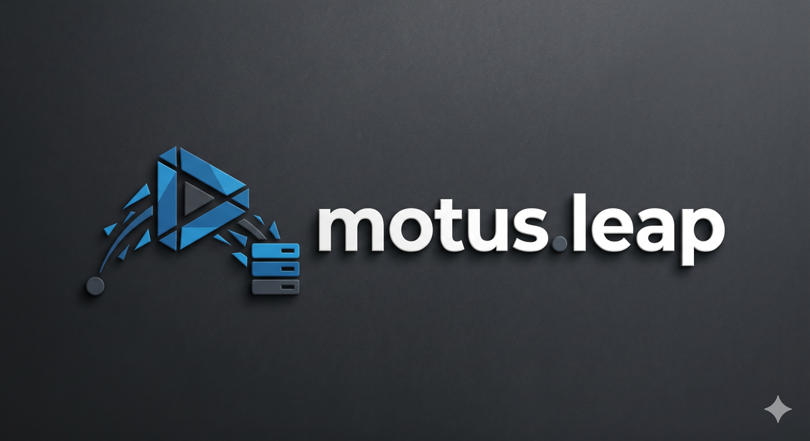
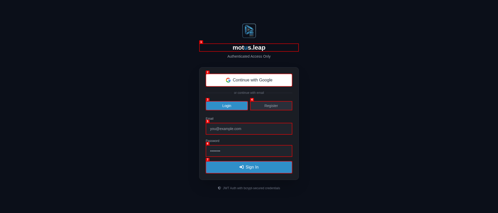

Less sorting.
More watching.
Browse playlists and channels, inspect mappings and queue scans for duplicates or misplaced videos.

Scan your YouTube library, review suggested destinations, and decide what belongs where.
Development build. Requires a configured motus.leap backend and Google sign-in.
AI proposes. You review the destination before a move.
A walk through Kyoto
Move to Travel & places?
This demonstration does not contact your account.
Browse playlists and channels, inspect mappings and queue scans for duplicates or misplaced videos.
Queued work stays separate from completed work. Review suggestions before you confirm changes to your library.
Configure the Android app and server
Development build. Requires a configured motus.leap backend and Google sign-in.